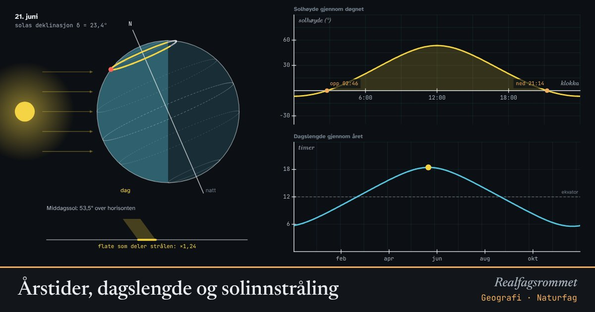

Årstider, dagslengde og solinnstråling
Jordaksen heller 23,4° mot banen rundt sola. Derfor står sola høyere og dagene er lengre om sommeren. Langt nord gir det midnattssol og mørketid.
Start animasjonen
Formler
Om animasjonen
Til venstre ser du jorda fra siden med sola til venstre. Den gule delen av breddesirkelen er dagslys, den mørke er natt. Andelen som er gul, er dagslengden.
Når nordpolen heller mot sola (juni), får hele den nordlige halvkula lange dager. Nord for polarsirkelen (66,6° N) går sola ikke ned i det hele tatt: midnattssol. I desember er det motsatt, og det blir mørketid.
Lav sol varmer mindre fordi den samme strålen fordeles på en større flate. Det er hovedgrunnen til at det er kaldere ved polene og om vinteren, ikke avstanden til sola. Jorda er faktisk nærmest sola i januar.
Grafen øverst til høyre viser solhøyden gjennom døgnet. Grafen nederst viser dagslengden gjennom året for breddegraden du har valgt.
Prøv dette
- Hvor lang er den lengste og den korteste dagen i Oslo? Sammenlign med Tromsø.
- Hvilken breddegrad har 12 timer dag hele året? Hvorfor?
- Finn den sørligste breddegraden med midnattssol. Hvorfor er den 90° − 23,4°?
- Hvorfor er det sommer i Australia når det er vinter i Norge?
Kompetansemål
- Geografi: Vær, klima og nedbør
- Geografi: Solinnstråling, årstider og klimasoner
Mer om klima, miljø og bærekraft
- Drivhuseffekten og jordas strålingsbalanse
- Karbonkretsløpet og CO₂ i atmosfæren
- Havforsuring: CO₂ gjør havet surere
- Klimaendringer og artenes utbredelse
- Miljøgifter hoper seg opp i næringskjeden
- Rovdyr og byttedyr
- Energistrøm og næringskjeder
- Grønn kjemi: atomøkonomi
- Regnskygge og føhn: hvorfor Bergen er våtere enn Oslo
- Flom: regn, jord og asfalt